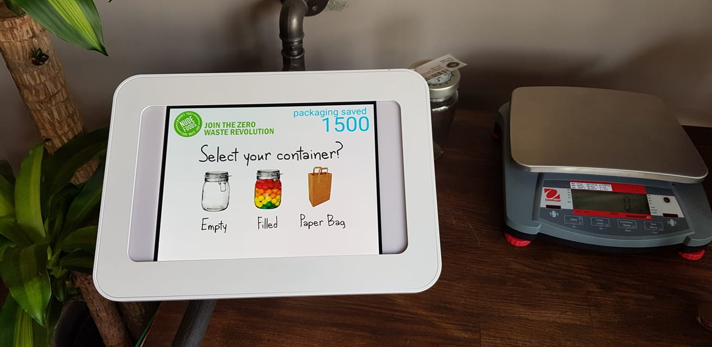
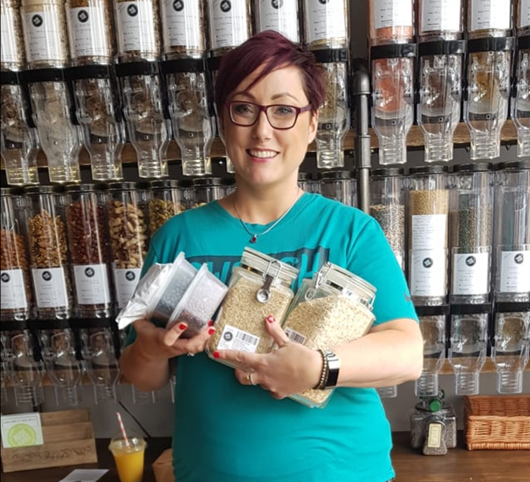

How it Works
Bring your containers or use the paper bags provided……
- Weigh 
Put your container on to the scales and print out a label. The label tells us the tare weight (empty weight) of your container. Leave the sticker on for future uses.
- Fill

Fill your container with however much you need of a single product. You can always use a funnel to help avoid spillages.
- Pay 
Take your pots full of lovely stuff to the cash desk to pay. The till will automatically deduct the weight of your container.